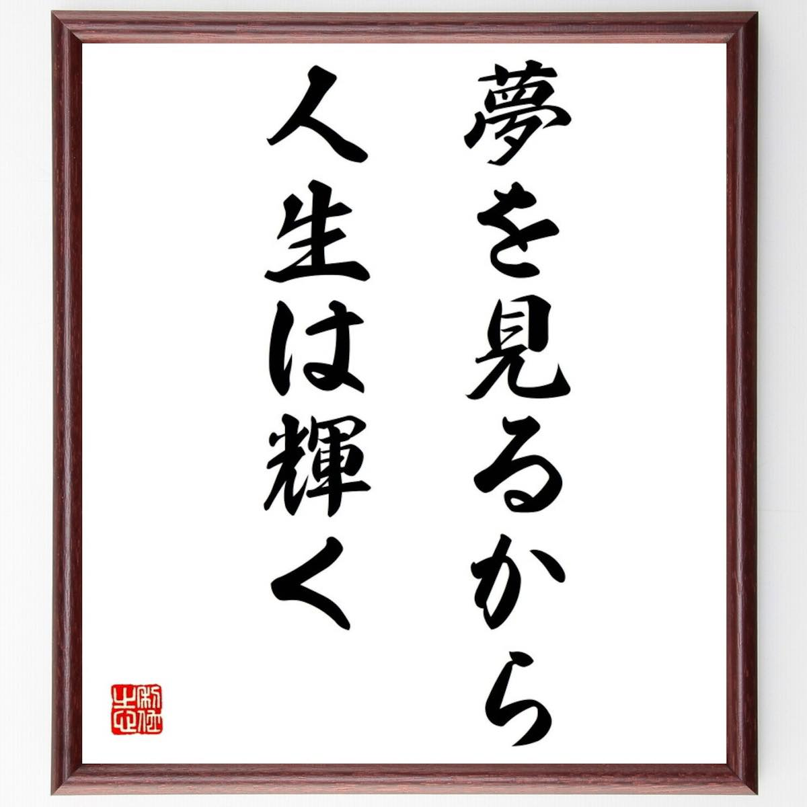
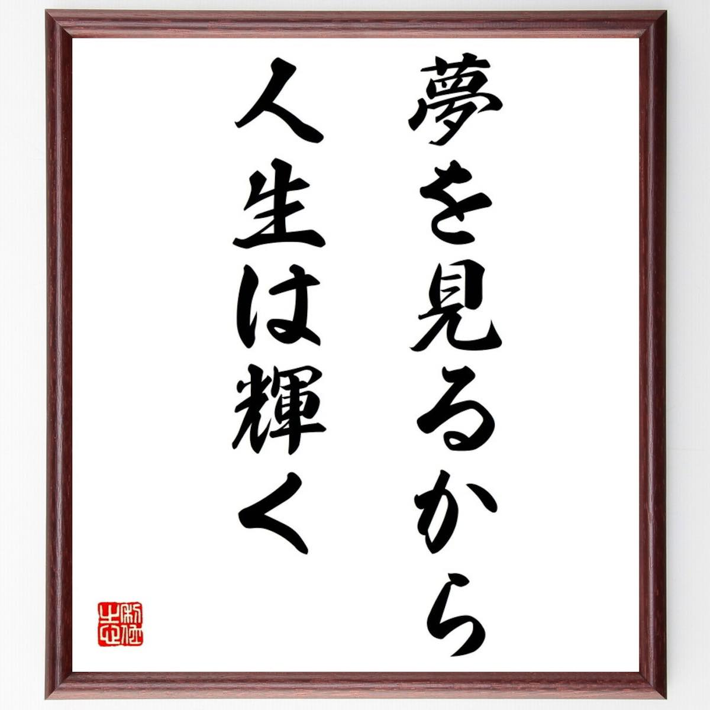

Posted on 24 November 2022
不是因做到了才相信，是因相信才能做到。<
偶然間看到的一句話 使我看見光芒 從深淵走出來。
一個人只要有夢想，生命就有了依託；一個人只有不懈地追逐著夢想，活著才覺得意義深遠，趣味無窮，也才能將生命的潛能發揮到極致。人因夢想而偉大，若是因為一次挫敗而不願面對現實，又怎能完成自己的抱負？
不是因做到了才相信，是因相信才能做到。<
偶然間看到的一句話 使我看見光芒 從深淵走出來。
一個人只要有夢想，生命就有了依託；一個人只有不懈地追逐著夢想，活著才覺得意義深遠，趣味無窮，也才能將生命的潛能發揮到極致。人因夢想而偉大，若是因為一次挫敗而不願面對現實，又怎能完成自己的抱負？
